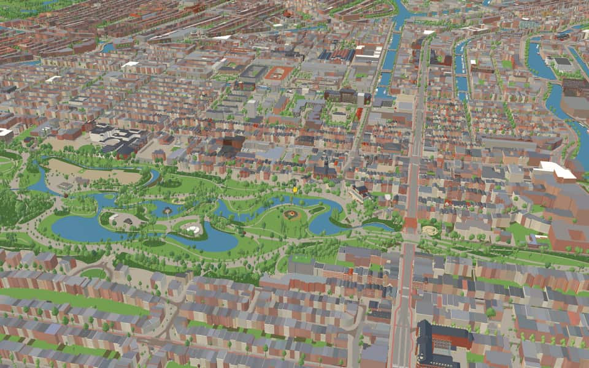
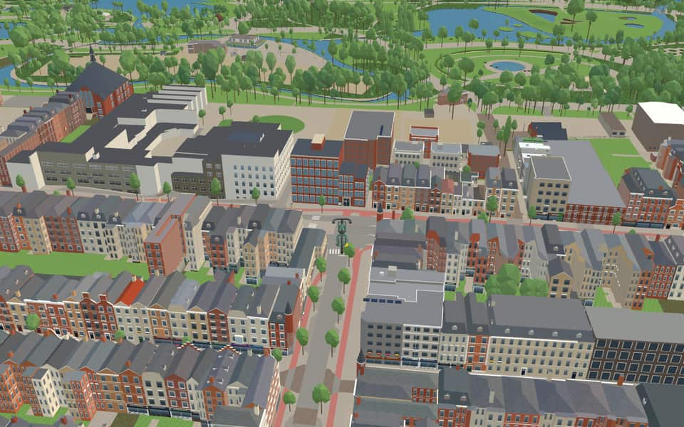
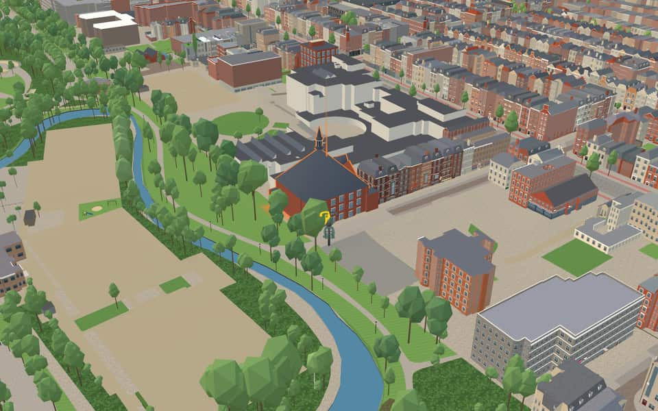
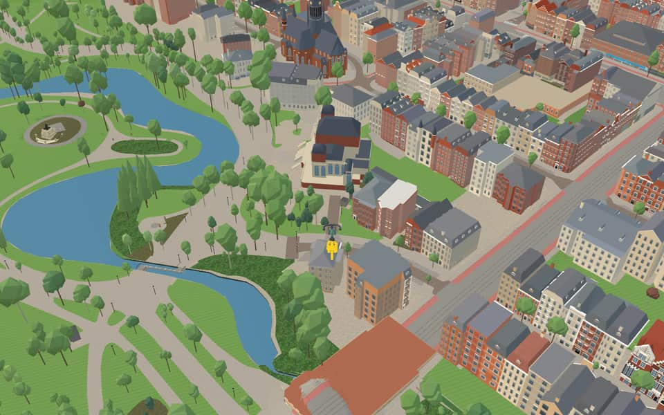

Quarter · Amsterdam
Vondelparkbuurt
Vondelparkbuurt is the shared name of three neighbourhoods in Amsterdam-West. The area belonged to Nieuwer-Amstel until it was annexed in 1896; around then it changed from an industrial strip with windmills into a residential and shopping area. nl.wikipedia.org
The name. The name matches Vondelpark, in the area. Joost van den Vondel (1587-1679), poet, who wrote 24 tragedies as well as poetry on heroes and heroic deeds. The part of the street that lay in the municipality of Nieuwer-Amstel before 1896 was first called Verlengde Vondelstraat. Led by C.P. van Eeghen, a group of Amsterdammers drew up a plan in 1864 for a park for riding and walking, which was then carried out to a design by L.D. Zocher. The first part opened in 1865. When a statue of Vondel was placed here in 1867, the park was named Vondelpark. Gemeente Amsterdam street-name register


In the game
Frames from a ride through Vondelparkbuurt.




6 more photos of Vondelparkbuurt


.jpg){kind=link}


.jpg){kind=link}
Built here
Buildings modelled one by one for the ride.
OT301 / former Film Academy
Orgelpark / Parkkerk
IDFA Het Documentaire Paviljoen
- No picture yet
Vondelkerk
- No picture yet
Zevenlandenhuizen
- No picture yet
Overtoom 197-205
- No picture yet
Overtoom 283, Amsterdam
Reade, rehabilitation and rheumatology centre (OSM way 152508198), BAG 1992
Did you know
Trivia the ride can show you here.
- The Hollandsche Manege, between the Overtoom and the Vondelstraat, is the oldest riding school in the Netherlands. Wikipedia (translated from Dutch)
- Artists squatted the former Dutch film academy in 1999; it is now the OT301 venue. Wikipedia
- In the church that is now the Orgelpark, Johannes Geelkerken caused a stir in 1923 by preaching that Genesis's talking snake was a metaphor. Wikipedia (translated from Dutch)
- OrgelparkA 2005 restoration replaced roof leadwork and used English Ffestiniog slate. nl.wikipedia.org
- OrgelparkThe venue officially opened its doors on January 20, 2007. nl.wikipedia.org
- OrgelparkBusinessman Loek Dijkman provided financial resources through his Utopa Foundation. nl.wikipedia.org
- OT301A vegan restaurant called De Peper closed in 2023 to become the lunch café Café Gilde. en.wikipedia.org
- OT301Amsterdam Mayor Job Cohen awarded OT301 the Amsterdam Prize for the Arts in August 2007. en.wikipedia.org
- OT301The venue once housed offices for European Youth For Action and Green Pepper magazine. en.wikipedia.org
- Dutch Equestrian School Museum Hollandsche ManegeWolfgang Amadeus Mozart performed here with his sister Marianne in 1766. en.wikipedia.org
- Dutch Equestrian School Museum Hollandsche ManegeAnimal rights group Dier & Recht has criticized the facility for horse conditions. en.wikipedia.org
- NassaukadeNearby Nassauplein and two Nassau streets share the same royal namesake origin. nl.wikipedia.org
- NassaukadeA movable bridge over the Kattensloot was renovated in 1954. nl.wikipedia.org
- NassaukadeEight municipal monuments line this street, including numbers 17 and 18. nl.wikipedia.org
7 more facts
- OvertoomThe children's song Schuitje varen, theetje drinken likely originated here in the 18th century. nl.wikipedia.org
- OvertoomFrom 1345 until later times, this route was known as the Holy Way because it led to a miracle. nl.wikipedia.org
- OvertoomA section near Vondelkerk briefly bore the alternative name Vondelkade before reverting to its original title. nl.wikipedia.org
- StadhouderskadeStadhouderskade was named in 1872 to honor stadholders William II and William III. nl.wikipedia.org
- StadhouderskadeA rainwater retention basin sits beneath the street near the Rijksmuseum. nl.wikipedia.org
- StadhouderskadeStadhouderskade 55 once housed a chapel, then the Van Nispenhuis which burned down before becoming the Willemshuis. nl.wikipedia.org
- StadhouderskadeA double symmetrical townhouse on Stadhouderskade may have been the home of pediatrician Sybren Schippers. nl.wikipedia.org
Names on the map
Where the canal, bridge and street names come from.
Streets
- Anna van den VondelstraatAnna van den Vondel (1620-1675), daughter of Joost van den Vondel, who cared for her father for many years. The street was originally named Anna Vondelstraat, but was later renamed (council decision of 29 November 1986) because it was confused with the Vondelstraat.
- Eerste Constantijn HuygensstraatPoet and prose writer (1596-1687), whose works include 'Hofwijck' and epigrams (sneldichten). He was secretary to several successive stadholders. Before 1894 parts of these streets were called Eerste and Tweede Bilderdijkstraat (council decisions of 15 May 1878 and 19 December 1883).
- Gerard BrandtstraatRemonstrant theologian (1626-1685) who wrote church history at first and poetry later. Until 1896 the street belonged to the municipality of Nieuwer-Amstel and was called H.G. Kosterstraat, after a building contractor (council decision of Nieuwer-Amstel, 5 October 1880).
- LeidsepleinThe city of Leiden.
- NassaukadeNamed after our royal house of Orange-Nassau. Before it was named in 1879, the quay was called Buitensingel.
- OvertoomNamed after the overtoom (a dam over which boats were hauled) built in the Schinkel in the fourteenth century. Until it was filled in in 1904 the Overtoom was a canal, the Heiligewegse or Overtoomse vaart. The southern quay, as far as it lay in Amsterdam, was called Vondelkade (council decision of 29 September 1875). The north side (the quiet side) has always been called Overtoom.
- Palamedesstraat'Palamedes, of vermoorde onnooselheyt' (Palamedes, or murdered innocence), a tragedy by Vondel about Van Oldenbarnevelt, written in 1626 after Maurits's death. The part of the Overtoom off which this street runs was formerly called Vondelkade. Until 1890 the Palamedesstraat was a private street, named by the builder; when the municipality took it over, the name was kept.
- Roemer VisscherstraatAmsterdam merchant and poet (1547-1620), host to the artists Vondel, Hooft, Huygens and Bredero in his house on the Geldersekade.
- StadhouderskadeWhen this quay had to be named, it was two hundred years since Stadtholder William III had freed the country from the English, the French and the forces of Münster. Although Amsterdam was never very pro-stadtholder, this was reason enough to honour the stadtholders, alongside a Nassaukade and a Mauritskade: namely William II (1626-1650) and William III (1650-1702).
- TesselschadestraatMaria Tesselschade Visscher (1594-1649), poet, who with her sister graced the Muiderkring (the Muiden Circle). She was a daughter of Roemer Visscher, who gave her this name at birth because he had just lost many of his ships off Texel (Tessel-schade, Texel damage).
- Tweede Constantijn HuygensstraatPoet and prose writer (1596-1687), whose works include 'Hofwijck' and epigrams (sneldichten). He was secretary to several successive stadholders. Before 1894 parts of these streets were called Eerste and Tweede Bilderdijkstraat (council decisions of 15 May 1878 and 19 December 1883).
- VondelparkJoost van den Vondel (1587-1679), poet, who wrote 24 tragedies as well as poetry on heroes and heroic deeds. The part of the street that lay in the municipality of Nieuwer-Amstel before 1896 was first called Verlengde Vondelstraat. Led by C.P. van Eeghen, a group of Amsterdammers drew up a plan in 1864 for a park for riding and walking, which was then carried out to a design by L.D. Zocher. The first part opened in 1865. When a statue of Vondel was placed here in 1867, the park was named Vondelpark.
2 more streets with a story
- VondelstraatJoost van den Vondel (1587-1679), poet, who wrote 24 tragedies as well as poetry on heroes and heroic deeds. The part of the street that lay in the municipality of Nieuwer-Amstel before 1896 was first called Verlengde Vondelstraat. Led by C.P. van Eeghen, a group of Amsterdammers drew up a plan in 1864 for a park for riding and walking, which was then carried out to a design by L.D. Zocher. The first part opened in 1865. When a statue of Vondel was placed here in 1867, the park was named Vondelpark.
- ZandpadAs early as 1688 this path is recorded as the sand path or Muntepad, belonging to Willem de Munt, goldsmith on the Nieuwezijds Achterburgwal. It will then have been a sandy track.